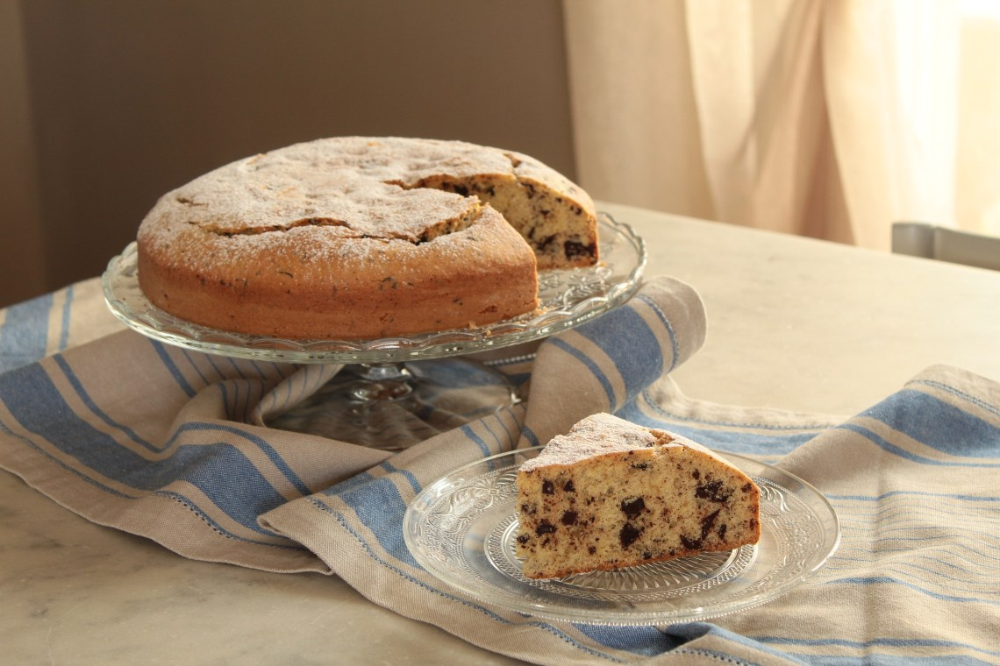
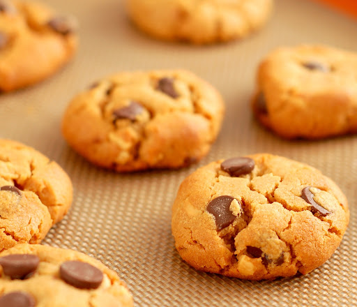
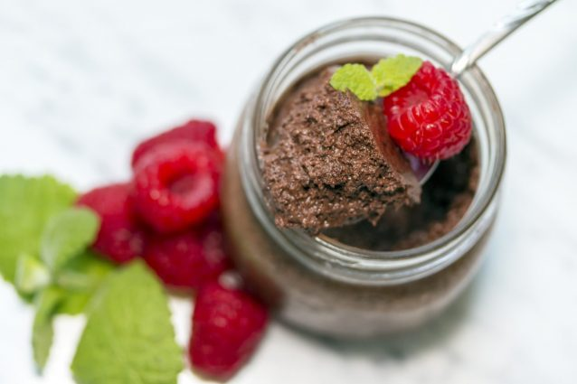

- 4 cucchiaini cacao
- 120 gr farina
- 200 ml latte
- 1 uovo medio
- 30 gr burro
- 1 bustina lievito
- 50 gr zucchero di canna
Unire con fruste elettriche o con quella a mano tutti gli ingredienti in una ciotola. Dopo aver creato l’impasto, usare un cucchiaio per mettere una parte di questo in padella in modo da formare un disco. Cuocere ogni pancake per circa tre minuti a lato.
Si possono gustare caldi con un filo di nutella o di miele.
Torta stracciatella

- 3 uova
- 160 gr zucchero
- 125 ml olio di semi
- 150 gr yogurt greco bianco (o la stessa quantità al caffè)
- 260 gr farina
- 1 bustina lievito
- 1 bicchiere latte
- 100 gr gocce di cioccolato fondente
In una ciotola metti le uova e lo zucchero e usa le fruste elettriche per creare l’effetto spumoso. Versa quindi l’olio di semi a filo ed aggiungi lo yogurt greco e mescola tutto.
Incorpora a questo punto la farina ed il lievito ben setacciati per evitare la formazione di grumi e mescola nuovamente. Aggiungi il latte e le gocce di cioccolato e mescola un’ultima volta.
L’impasto sarà pronto per cuocere in forno dopo averlo riposto in una teglia ben imburrata ed infarinata. Cuoci la torta stracciatella a 180 gradi forno statico per 50 minuti circa.
Biscotti all’arancia con gocce di cioccolato

- 1 uovo
- 100 gr zucchero
- 1/2 bicchiere olio di semi
- succo di un’arancia
- scorza di arancia
- 300 gr farina
- 1 bustina lievito
- 100 gr gocce di cioccolato fondente
In una ciotola mescola l’uovo e lo zucchero. Appena l’impatto risulta spumoso aggiungi l’olio di semi e mescola ancora con fruste elettriche. A questo punto aggiungere all’impasto la scorza ed il succo d’arancia, la farina, il lievito e per ultime le gocce di cioccolato.
Fai delle palline con l’impasto, pressale appena e riponile in una teglia. Lascia riposare le palline di impasto in frigo per 30 minuti.
Cuoci infine i biscotti in forno a 180 gradi per 20 minuti circa. Una volta cotti, puoi consumare i biscotti caldi ma puoi anche conservarli in un contenitore di vetro fino a 3 giorni.
Coppette light yogurt e cacao

- 4 biscotti al cioccolato
- 1 yogurt bianco
- q.b. cacao amaro in polvere
Schiaccia i biscotti fino a ridurli in granella. In una ciotola metti lo yogurt ed un cucchiaio di cacao amaro e mescola bene.
Inizia ad assemblare le coppette, mettendo sul fondo un cucchiaino di biscotti tritati, poi un po’ di yogurt al cacao e via via così fino a terminare con la polvere di biscotti. Metti a riposare in frigo per un’oretta e goditi un dessert leggero e fresco adatto ad ogni stagione!